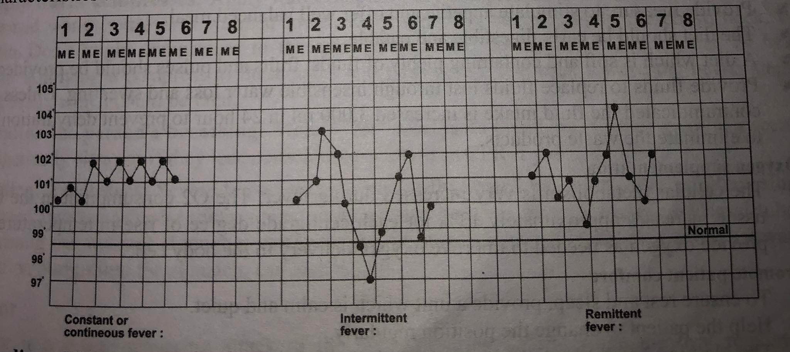

Contraindications
Subject: Fundamentals of Nursing

Overview
Contraindications
Contraindications
Oral Method
- The patient who may bite the thermometer like psychiatric patients.
- Patients who are not able to hold thermometer in their mouth.
- Patients who cannot follow instructions.
- Infants and small children.
- Surgery/infections in oral cavity.
- Trauma to face/mouth.
- Patients who have severe cough.
- Patients who breathe through mouth.
- Patients with continue convulsion.
- Patients with continue vomiting.
- Patients having chills.
- Dysphonic patients.
- Unconscious/semiconscious/disoriented patients.
- Uncooperative patients.
Rectal Method
- After rectal surgery, patients.
- Rectal harm or infection.
- Patients who struggle to take positions.
- Patients with dysentery or diarrhea.
- Any disease (piles, tumor) of the rectum.
- Fecal matter impact.
- Platelet count decline.
Axillary Method
- Any surgery/lesion in axilla.
Abnormal Body Temperature
A body's temperature is considered abnormal when it deviates from normal. Excessive heat generation, excessive heat loss, minimum heat production, minimal heat loss, or any combination of these abnormalities are linked to variations in body temperature outside of the normal range. A change in the hypothalamic set point causes fever. Bacteria and viruses are pyrogens that cause body temperature to rise. Pyrogens behave as an antigen, inducing reactions from the immune system. The body produces and stores heat in response to the hypothalamus's action to increase the set point. Before the body temperature reaches the new set point, several hours pass. Even if the body temperature is increasing, a person has chills, shivers, and feels chilly at this time. When the new set point, a higher temperature, is reached, the chill phase ends. The following stage is characterized by a plateau, a decrease in the chills, and a warm, dry feeling. The third stages of a febrile episode take place if the new set point is exceeded or the pyrogens are eliminated. Responses to heat loss are triggered when the hypothalamic set point decreases. Vasodilation causes the skin to become warm and flushed. Evaporative heat loss is helped by diaphoresis. The patient becomes afebrile after the fever subsides.
Pyrexia: When the body temperature is elevated above normal, the patient is said to have pyrexia or Fever is the temporary increase in the body's temperature in response to a disease illness. Fever occurs because heat loss mechanisms are unable to keep pace with excessive heat production, resulting in an abnormal rise in body temperature. Fever is an important part of the body's defense against infection. or
Hyperthermia: When your temperature climbs too high and threatens your health, it's known as hyperthermia. Whereas fever is an upward shift in the set point, hyperthermia results from an overload of the thermoregulatory mechanisms of the body. Hyperthermia is defined as elevated core temperature of greater than 38.5°C (101.3°F) any disease or trauma to the hypothalamus impairs heat loss mechanisms.
Heatstroke: Heatstroke is a condition caused by body overheating, usually as a result of prolonged exposure to or physical exertion in high temperatures. Heat stroke is the most severe heat-related illness and is defined as a body temperature higher than 40°C (104°F) associated with neurologic dysfunction.
Heat Exhaustion: Heat exhaustion occurs when profuse diaphoresis results in excess water and electrolyte loss. This is one of the most serious stages of hyperthermia. Heat exhaustion occurs when body can't cool itself any more.
Hypothermia: Hypothermia is a condition that occurs when your body temperature drops below 95°F. Major complications can result from this drop in temperature, including death. Hypothermia is particularly dangerous because it affects your ability to think clearly. The most common symptoms of hypothermia include:
- Excessive shivering,
- Slowed breathing,
- Slowed speech,
- Clumsiness,
- Stumbling,
- Confusion.
Causes of Pyrexia/Fever
Fever is the result of an immune response by the body to a foreign invader. Elevated body temperature might be caused by:
- the presence of a virus.
- a bacterial contamination.
- severe sunburn.
- diseases of the neurological or muscle systems are examples of systemic diseases.
- Blood conditions like leukemia and embolism.
- Dehydration.
- surgery, trauma, and accidents.
- Skin conditions including chicken pox, rashes, and measles.
- a few inflammatory diseases, such rheumatoid.
- a cancerous growth.
- Vaccinations against pneumococcal, diphtheria, and tetanus, among others.
Physiological Changes
- Central Nervous System: Shivering, chills, Headache, restlessness, insomnia, may develop convulsions and delirium.
- Circulatory System: Increase pulse, palpitation. Respiratory: Shallow and rapid breathing
- Digestive: Dry mouth, coated tongue, loss of appetite, indigestion, nausea, vomiting. Urinary: Decrease in urinary output, burning micturition.
- Musculoskeletal: Malaise, fatigue, and body ache.
- Skin: Shin flushing, sweating.
Types of Fever
Constant or Continuous Fever: This type of fever remains at the same level for a period of time with a variation of not more than 1 to 2F between morning and evening but the temperature does not come to normal. This type of fever occurs in lobar pneumonia, typhoid, urinary tract infection, infective endocarditis, brucellosis, typhus, etc.
Remittent Fever: In remittent fever, the elevated temperature fluctuates widely between morning and evening but does not reach normal levels between fluctuations e.g. septicemia.
Intermittent Fever: High fever with a wide range between morning and evening temperature usually accompanied by rigor and touches the normal or subnormal during the twenty four hours. Intermittent fever is seen in malaria, kala-azar, pyemia, septicemia, etc.
Relapsing Fever: Recurrent episode of fever lasting after a few days. Usually fever tends to be higher in the evening than in the morning or febrile periods followed by one or more days of normal temperature.
Inverse: In this type, the high temperature is recorded in the morning and lowest temperature is recorded in the evening.
Lysis: Temperature falls step by step; temperature comes to normal within 3-4 days or within one week e.g. typhoid.
Crisis: In this, the temperature falls suddenly from high fever to normal e.g. respiratory tract infection.
Irregular Fever: Fever not corresponding to any of the above but manifesting characteristics at some or all of them at one time or another.

Grading of Fever
Hypothermia/Collapse: Below 35°C or 95°F is called hypothermia.
Hypo Pyrexia/Subnormal: When the body temperature below the average normal is called subnormal temperature (95°F to 97°F or 35°C-36.1°C).
Low Pyrexia: If the temperature ranges from 99°F to 101°F (37.2°C -38.3°C), it is called as low pyrexia.
Moderate Pyrexia: The body temperature ranges between 101°F to 103°F (38.3°C -39.4°C) is called as moderate pyrexia.
High Pyrexia: The temperature between 103° F to 105°F (39.4°C -40.5°C) is called as high pyrexia.
Hyper Pyrexia/Hyperthermia: The temperature goes above 105°F (40.5°C).
Care of Patient with Fever
Minimize Heat Production
- Reduce the frequency of activities that increases oxygen demand such as excessive turning and ambulation.
- Allow rest periods.
- Limit physical activity.
Maximize Heat Loss: Care of the patient in fever focuses on reducing the elevated body temperature. When the patient's temperature is elevated, various methods of reducing the temperature may be started.
- Take the patient's temperature and evaluate their general health.
- Keep the space adequately ventilated.
- Clear away blankets and extra clothes, but guard against drafts.
- Dry out your bed linens and garments.
- If the client does not have any fluid limitations, encourage them to increase their consumption.
- Apply a warm bath, packs, and compresses.
- Utilize an electric fan to deliver cool air.
- After 15 to 20 minutes of nursing interventions, take your temperature.
- If the temperature is not decreased then inform to the senior and give him/her antipyretics according to the doctor's order and record the temperature every 15-20 minutes or 1/2 hourly or need of patient.
Nutritional Management
- Provide measure to stimulate appetite and offer well balanced meal.
- The diet should be early digestible and patable.
- A diet which is soft and containing plenty of fluids, fruits and pulses should be provided.
- Provide fluids to replace fluids lost through insensible water loss and sweating. Unless it is contraindicated the fluid intake is increased 3,000 ml in 24 hour to prevent dehydration and to eliminate the waste products.
Oxygen Supplementation
- The cellular metabolism is very increased during fever. The O2 consumption in the body tissue increases approximately 13% for each centigrade degree of rise in temperature. So provide oxygen as needed to improve oxygen delivery to the body cell.
Promote Patient Comfort
- Provide a peaceful and quiet environment so that you may rest and sleep.
- Encourage the patient to shift positions often.
- Clothing should be comfortable, light, loose, and not itchy. Cotton clothing is useful since it absorbs moisture and aids in evaporation.
- Encourage good dental health since dehydration can cause oral mucous membranes to quickly dry up.
- Control the environment's temperature without causing shivering.
Maintain Personal Hygiene
- To keep your mouth clean, rinse it frequently.
- Daily sponge baths should be given to keep patients clean.
- Frequent sponging is necessary if there is excessive perspiration.
- Pressure sore prevention should include back care.
- Cotton clothing should be changed as needed.
Care of Safety Factors
- Never leave a patient alone who has a high temperature.
- Convulsions and rigors can happen at any moment, therefore the nurse should always have everything at the ready to handle them immediately.
- Cooling the surface should be done gradually. Serious negative side effects such heart arrhythmias might result with abrupt cooling.
Observational Care
- The nurses must keep an educated eye on the patient who has a fever constantly. The vital signs should be monitored often to determine if a disease is progressing or regressing.
- Start your health education as needed.
- Set the environment's temperature between 21 and 27 °C.
Care of Patient with Hypothermia
Hypothermia is a medical emergency. The goal of hypothermia treatment is to increase body temperature to a normal range. While waiting for emergency care, the affected person or their caregiver can take a few steps to remedy the situation:
Handle the person with care: Handle the affected person with care. Don't massage him in an attempt to restore blood flow. Any forceful or excessive movements may cause cardiac arrest. Move or protect them from the cold.
Remove the person's wet clothing: Remove the person's wet clothes. If necessary, cut them off to avoid moving the individual. Cover them with warm blankets, including their face, but not their mouth. If blankets aren't available, use your body heat to warm them. If they're conscious, try to give those warm beverages or soup, which can help to increase body temperature.
Apply warm compresses: Apply warm (not hot), dry compresses to the individual, such as a warmed water bottle or a warmed towel. Only apply the compresses to the chest, neck, or groin. Don't apply compresses to the arms or legs, and do not use a heating pad or heat lamp. Applying a compress to these areas will push cold blood back toward the heart, lungs, and brain, which could be fatal.
Monitor the person's breathing: Monitor the individual's breathing. If their breathing seems dangerously slow, or they lose consciousness, perform CPR if you're trained to do so.
Medical Treatment: Severe hypothermia is medically treated with warm fluids, often saline, injected into the veins. Airway rewarming can also be done through masks and nasal tubes. Warming the stomach through a cavity lavage, or stomach pump, in which a warm saltwater solution pumps into the stomach, can also help.
Rigor
Rigor is a severe shivering attack of the body which is caused when the heat regulatory mechanism of the body is disturbed.
Shivering occurs due to vigorous contraction of the body muscles to produce heat and starts with a rise in temperature. Once the temperature reaches high the patient start and the temperature falls.
Causes
Infections e.g. malaria, respiratory tract infection. Allergic reactions e.g. after I.V. infusion or blood transfusion, and due to certain drugs.
Stage of Rigor
Cold Stage
Cold stage remains for 15 to 20 minutes.
Sign and symptoms
- Patient becomes restless; skin is cold and pale face.
- Patient feels chill.
- Extreme uncontrollable shivering.
- Increase pulse.
- The temperature rises rapidly to 103°F or above.
Nursing Management
- Assess the condition of the patient and take the temperature and record in the TPR chart.
- Cover the patient with warm blankets.
- Give hot water bag to keep the patient warm.
- Put off the fan and put the patient with thick clothes.
- Provide rest.
- Give hot and more drinks.
- Take temperature immediately after the cold stage.
Hot Stage
This is the stage when the temperature reaches high. This stage lasts for few minutes to few hours.
Sign and Symptoms
- In this stage the patient stops shivering and starts feeling hot.
- Patient feels thirsty.
- The patient may become restless.
- The temperature may continue to rise.
Nursing Management
- Remove blankets and hot water bags.
- Cover only with thin sheet.
- Give cold drinks.
- Apply cold compression and ice cap.
- Record TPR.
Sweating Stage
Sign and Symptoms
- The patient sweats profusely.
- As the sweat evaporates the patient's temperature drops.
- Patient may go into a stage of shock and collapse, if not cared properly.
Nursing Management
- Remove wet clothes and put on dry clothes.
- Give hot and sweet drinks to avoid fatigue.
- Make the patient comfortable.
- Watch temperature, pulse, respiration frequently without disturbing.
Things to remember
© 2021 Saralmind. All Rights Reserved.
 Login with google
Login with google
 Login with facebook
Login with facebook